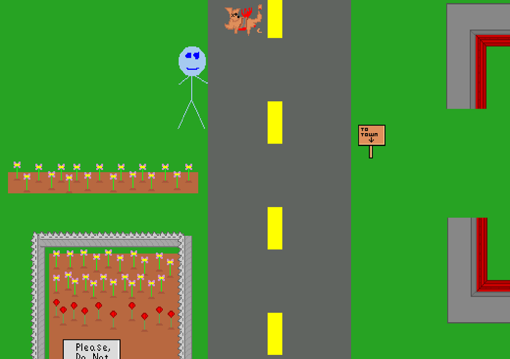

Get Killed
Pasta Warlock
To tell you about this game: I designed the road, the dog, the car, and the walking stickman. I programmed him to die when crossing the road. I did this while visiting my parents house on the family computer. I had already moved away. A few weeks later, my brother had finished the game by adding more death traps. It was a pleasant surprise and collaboration. I thought it was hilarious.
-RFI Downloads Direct Download - 450KB Internet Archive Link2024 South Park Gaming